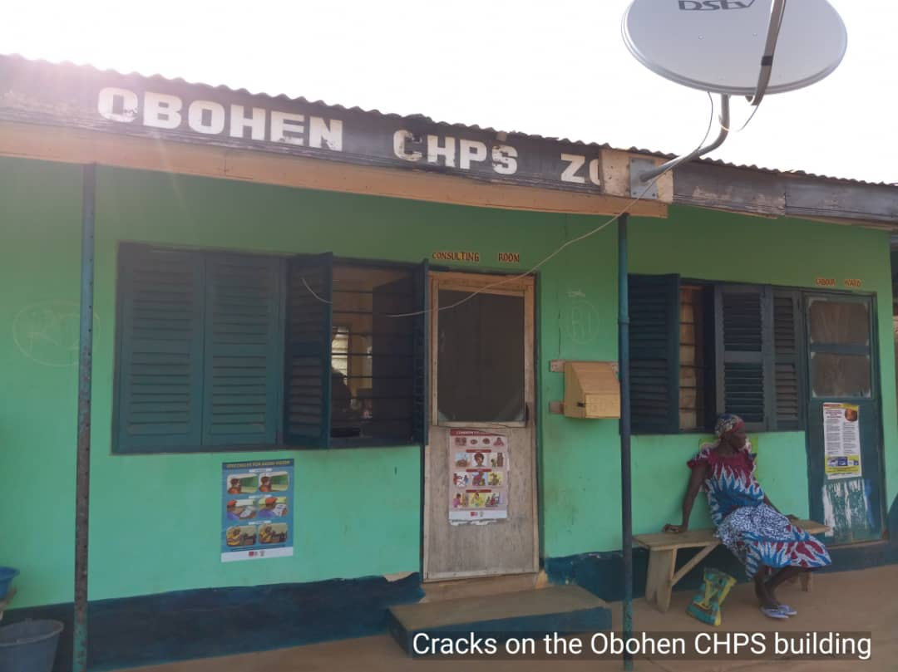

Health Foundation
OBOCOTRUST FOUNDATION FOR HEALTH

Our Foundation for Health will focus on programmes to improve the health of our community and enhance healthcare provision at our community clinic. We will embark on educational programmes on healthy living which will provide information on diseases, their causes and how they can be prevented.
We all fall ill at some point in life so we will focus our health programmes on awareness, prevention, nutrition, dieting and physical activities which will help to bring about healthy living and also help the community to understand how diseases like diabetes, stroke, prostate and cancer affect them and treatments available.
OBOCOTRUST Foundations are focussed on the community of Abora Obohen, but on health, our thinking and programmes will extend to our neighbouring communities and the whole of the Abora District Council. Where we have capacity we will extend elsewhere within the Central Region of Ghana cooperating with other well meaning organisations who share objectives in improving health outcomes for our peoples.
I am delighted to have been appointed as the Director for OBOCOTRUST Foundation for Health and indeed the first director as we launch our NGO. The health sector is an area of interest to me personally and I work in it albeit in a different role to this important work.
I am well conversant with all the problems and issues which need to be addressed at our Community Health Clinic. I have tried to offer personal help and advice to enhance the work that our nurses do for our community so I am delighted to have this opportunity to work to bring about a different situation - one that will change things for good.
Our Foundation for Health gives me the opportunity to think wider to find ways to deliver and make a difference in health outcomes for our community and beyond.  OBOCOTRUST NGO has good leadership with clear and modern ideas and focus. We hope we will receive much needed financial support internationally and nationally, and expertise/advice and volunteering impetus which will make things improve health outcomes in our community.
OBOCOTRUST NGO has good leadership with clear and modern ideas and focus. We hope we will receive much needed financial support internationally and nationally, and expertise/advice and volunteering impetus which will make things improve health outcomes in our community.
MEDIUM TERM OBJECTIVES
● Deal with structural defects on Community Clinic building
● Look into the abandoned new Health Centre project
IMMEDIATE OBJECTIVE
● Appeal for funds/grants from national benevolent institutions, philanthropists, corporations and companies and international charitable grants and philanthropists and private donations.
INITIAL FOCUS : HEALTH PROGRAMMES
With available of funds the following programmes will be planned and delivered:
● Basic health screening through our community clinic: general checks on BP, blood sugar, covid 19, body temperature, typhoid fever and blood sampling for laboratory analysis and advice on results so we can plan and help or sponsor treatments where necessary.
● Vaccinations: measles, covid 19, yellow fever etc
● Dental Health (international and national volunteering dentists help needed)
● Eye testing (international and national volunteering eye specialists help needed)
● Hearing testing (international and national volunteering experts help needed)
● We need basic modern electronic devices to do these checks easily and effectively and help with the cost of laboratory analysis. Resources at our community clinic are very limited with some of these devices not being available.
● Basic Health Education on puberty, contraception and safe sex, diet and exercise, breast feeding, dangers of excessive drinking, smoking and other areas of general healthy living.
Literacy levels are being focused on elsewhere but older members of our community have low levels of education so we will work hard to bring about these programmes regularly in a manner that will achieve results in helping them live reasonable healthy lives.
WE NEED FINANCIAL HELP to work hard to deliver these programmes.
Thank you.
PAUL KINGSLEY ARTHUR
Director - OBOCOTRUST Foundation for Health.